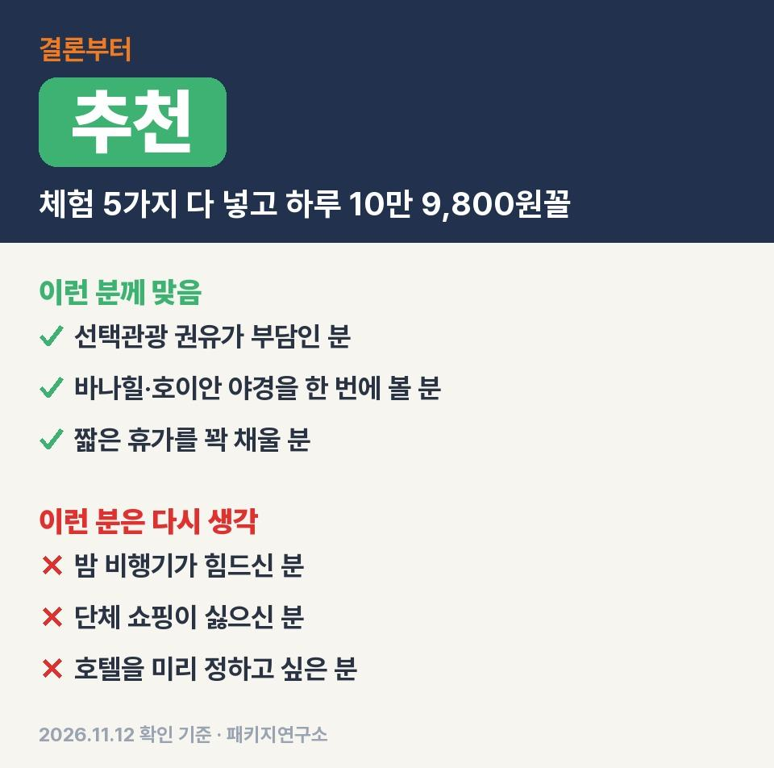
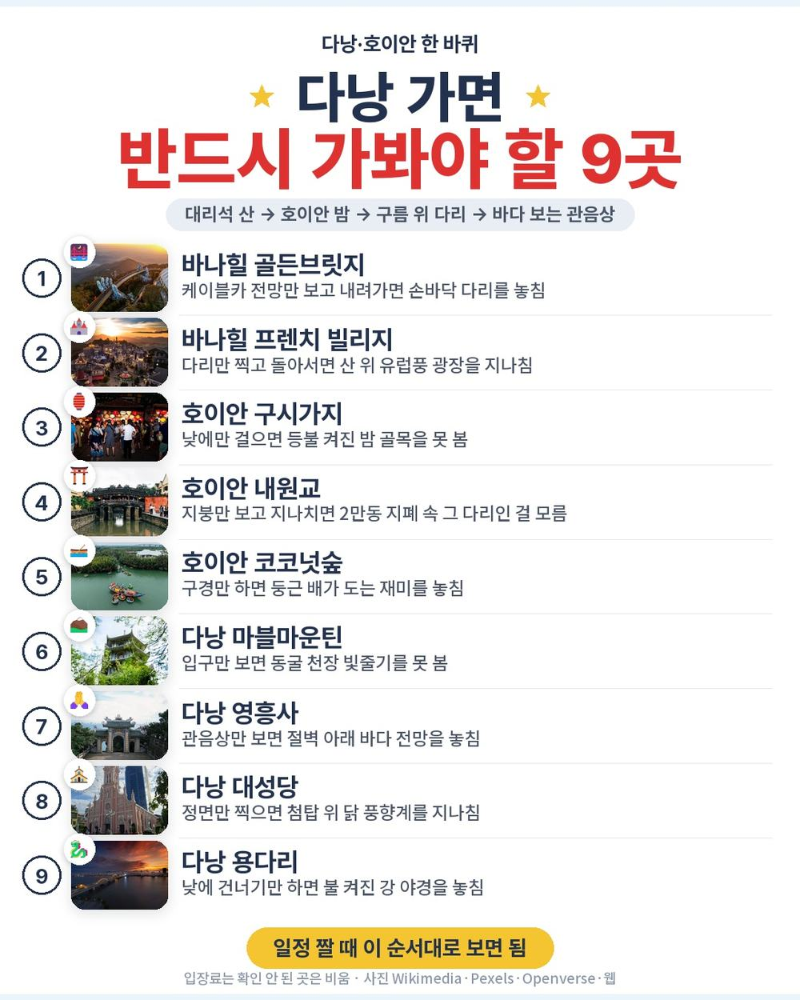
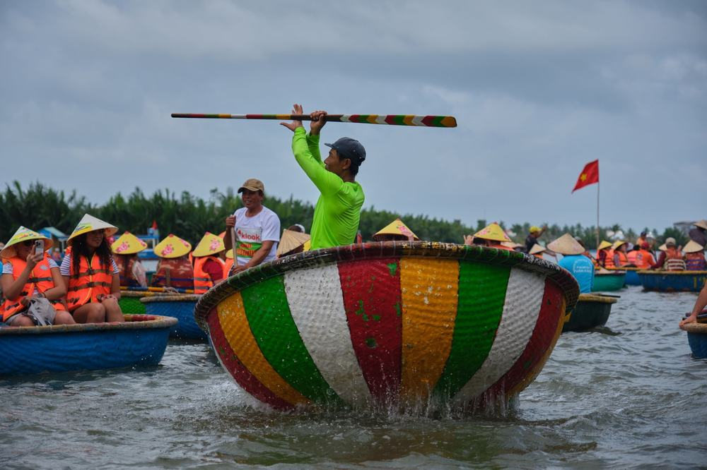
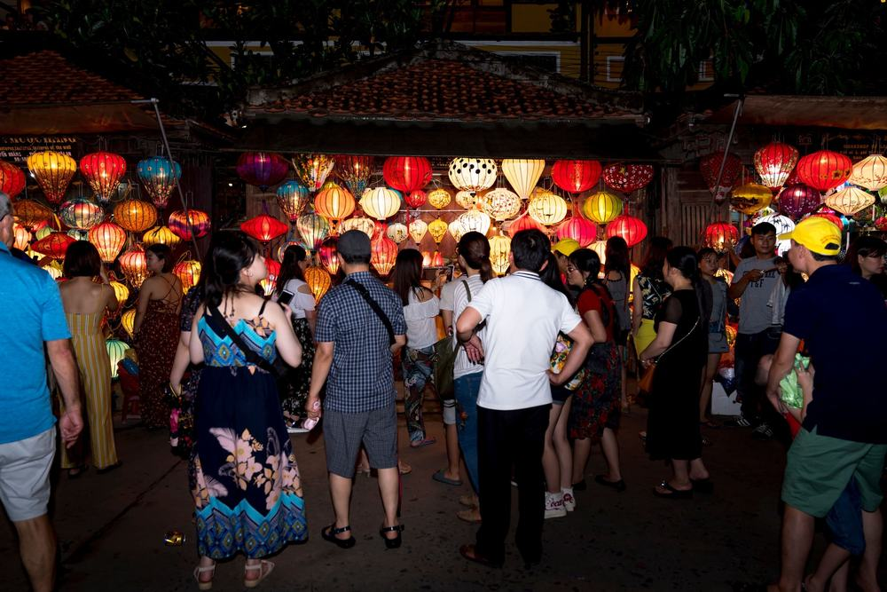
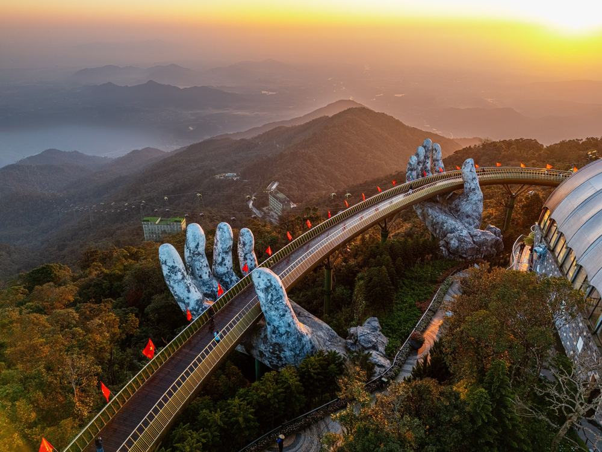

다낭 상품에서 현지 체험 다섯 가지를 전부 상품가 안으로 넣고 선택관광 칸을 비워 둔 구성은 50만원대에선 잘 안 보임. 대신 오가는 편이 둘 다 밤 비행기라 그 점이 갈림길이 됨.
직접 다녀온 후기가 아니라, 일정표와 포함·불포함 원문을 한 줄씩 대조해서 따져 본 글임.
결론 — 추천. 에어서울 직항, 5성 3박, 식사 9회, 체험 5가지에 바나힐·호이안 야경까지 54만 9천원 안에 있음. 다만 밤 비행기가 힘드신 분은 맞지 않음.

오늘 기준 출발일별 요금 보기
https://naver.me/5QsNW5RV

| 항목 | 내용 |
|---|---|
| 가격 | 1인 549,000원 (성인 · 11월 출발 기준) · 2인 1,098,000원 |
| 여행사 | 참좋은여행 |
| 항공 | 에어서울 직항 (RS511·RS512) · 갈 때 4시간 55분 / 올 때 4시간 35분 · 밤 출발, 새벽 귀국 · 기내식 없음 |
| 숙소 | 5성 3박 (래디슨·노보텔·포포인츠·보코·페닌슐라 중 출발 2~3일 전 문자 안내) · 2인 1실 |
| 일정 | 3박 5일 · 다낭 → 호이안 → 바나힐 → 다낭 · 한국어 가이드 · 쇼핑 2회 · 선택관광 없음 · 가이드·기사 경비 1인 50달러 별도 |
▶ 내 출발일 오늘 기준 요금 확인 (제휴 링크 · 예약 시 수수료를 받으며 가격은 같습니다)
▶ 11월 12일 기준 다낭 패키지 최저 31만 900원부터 — 출발일별 값 한 화면에: 비교 페이지
| 번호 | 내용 | 한 줄 답 |
|---|---|---|
| 1 | 이 값에 들어 있는 것 | 체험 5가지 |
| 2 | 현장에서 더 낼 돈 | 2인 약 14만 2천원 |
| 3 | 일정과 체력 | 2일차가 제일 바쁨 |
| 4 | 자유여행으로 짜면 | 항공값 미확인 |
| 5 | 맞는 분 · 안 맞는 분 | 3 대 3 |
상품이 200달러 상당이라 적은 체험 다섯 가지가 전부 값 안에 들어 있다는 게 핵심임.

- 항공: 에어서울 인천–다낭 직항 왕복, 유류할증료·제세공과금 포함
- 숙소: 5성 호텔 3박, 2인 1실
- 식사: 9회 — 보 스테이크, 바나힐 비어플라자 뷔페, 딤섬 뷔페, 한식 두 번
- 체험: 바구니배 · 야간 씨클로 · 차밍쇼 · 핫스톤 마사지 90분 · 한강 유람선
- 덤: 열대 과일 뷔페, 아오자이 입고 사진, 코코넛 커피

근데 호텔은 다섯 곳 중 하나로 출발 2~3일 전에 정해짐. 래디슨이든 노보텔이든 다 5성이라 등급은 같고, 어느 곳이 될지만 늦게 알게 됨.
꼭 내는 건 가이드 경비 50달러 하나고 나머지는 팁 몇 달러 수준임.
| 항목 | 금액 | 필수/선택 | 비고 |
|---|---|---|---|
| 가이드·기사 경비 | 100달러 (약 13만 4천원) | 필수 | 1인 50달러, 아동 같음 |
| 마사지 팁 | 6달러 (약 8천원) | 별도 | 1인 3달러 (일정표 표기) |
| 바구니배 사공 팁 | 소액 | 선택 | 금액 표기 없음 |
| 선택관광 | 0원 | — | 선택관광 없음 |
| 합계 (2인 필수분) | 106달러 (약 14만 2천원) | 1달러 약 1,342원 · 2026-11-11 환율 |
- 2인 총액(필수분까지): 약 124만원, 1인 62만원꼴
- 기내식이 없어서 공항에서 먹는 한 끼 값은 따로 생각해 두는 게 좋음
- 매너 팁·간식 같은 개인 비용은 별도
2일차 하루에 마사지·대리석 산·바구니배·구시가지·씨클로가 다 몰려 있어서 그날만 넉넉히 버티면 됨.
| 일차 | 가는 곳 | 버스 | 걷기 | 점심 · 저녁 |
|---|---|---|---|---|
| DAY 1 | 인천 → 다낭 (밤 도착) → 호텔 | 약 30분 | 적음 | — · — |
| DAY 2 | 핫스톤 마사지 → 마블마운틴 → 호이안 바구니배 → 구시가지 → 씨클로 | 약 2시간 | 많음 | 보 스테이크 · 현지식 |
| DAY 3 | 과일 뷔페·아오자이 → 바나힐 케이블카 → 골든브릿지 | 약 2시간 | 보통 | 한식 · 비어플라자 뷔페 |
| DAY 4 | 쇼핑 → 영흥사 → 다낭 대성당 → 차밍쇼 → 한강 유람선 → 공항 | 약 1시간 30분 | 보통 | 한식 · 딤섬 뷔페 |
| DAY 5 | 다낭 새벽 출발 → 인천 아침 도착 | — | 적음 | — · — |
- 버스: 다낭–호이안이 약 30km라 하루 이동은 길지 않음
- 걷기: 마블마운틴 돌계단이 가파르고 호이안은 골목을 꽤 걸음
- 4일차는 체크아웃 뒤 밤까지 일정이 이어지고 바로 새벽 비행기라 제일 긴 날

무릎이 불편하시면 마블마운틴 앞에서 가이드에게 미리 말해 두시면 됨. 바나힐은 산 위라 11월에도 바람이 차서 얇은 겉옷 하나 챙기면 편함.
항공값을 오늘 조회하지 못해 합계는 비워 뒀고 체험 다섯 가지를 따로 예약하는 수고가 제일 큰 차이임.
| 항목 | 금액 | 근거 |
|---|---|---|
| 인천–다낭 왕복 항공 | 확인 못 함 | 2026-11-12 마이리얼트립 조회 실패 — 숫자를 지어내지 않음 |
| 5성 호텔 3박 | 확인 못 함 | 호텔이 출발 직전 정해지는 상품이라 비교 기준이 없음 |
| 식사 (9회) | 확인 못 함 | 뷔페 2번·스테이크 포함 구성 |
| 체험 5가지 | 200달러 상당 | 상품 원문 표기(바구니배 40 · 씨클로 50 · 차밍쇼 40 · 마사지 40 · 유람선 30) |
| 공항 이동 · 다낭–호이안 이동 | 직접 예약 | 밤 도착이라 픽업을 따로 잡아야 함 |
| 여행자보험 | 따로 가입 | 패키지는 포함 |
| 가이드 | — | 자유여행은 없음(패키지는 한국어 가이드) |
| 합계 | 확인 못 함 |
- 패키지: 항공·호텔·식사·체험·가이드까지 1인 54만 9천원
- 자유여행: 체험만 상품 표기로 200달러어치, 거기에 항공·호텔이 따로 붙음
밤 11시 넘어 내리는 공항에서 호텔까지 가는 길을 직접 잡는 게 생각보다 번거로움. 그 부분까지 맡기는 값으로 보면 계산이 쉬움.
걸리는 건 밤 비행기와 쇼핑 두 번이고 볼거리와 체험은 다낭 대표 코스를 다 채움.
| 맞는 분 | 안 맞는 분 |
|---|---|
| 선택관광 권유가 부담인 분 | 밤 비행기가 힘드신 분 |
| 바나힐·호이안 야경을 한 번에 볼 분 | 단체 쇼핑이 싫으신 분(2회, 각 약 1시간) |
| 짧은 휴가를 꽉 채울 분 | 호텔을 미리 정해 두고 싶은 분 |
이 상품으로 다녀온 분들 후기를 보면 바구니배가 흥겨웠다는 말, 노옵션이라 추가 비용 걱정이 없었다는 말이 겹쳐 나옴. 아쉬운 쪽은 더운 날 씨클로에서 먼지를 꽤 맞았다는 얘기. 11월은 비가 잦아서 우비를 챙기라는 요령도 같이 남아 있음.
Q. 다낭 패키지 가이드 경비는 얼마인가요?
A. 이 상품은 1인 50달러를 현지에서 냄. 아동도 같음. 마사지 팁 3달러는 따로임.
Q. 다낭 패키지 쇼핑은 몇 번 가나요?
A. 2회. 노니·침향 매장과 커피 매장이고 곳마다 약 1시간 머묾. 사는 건 자유임.
Q. 다낭 패키지 밤 비행기면 첫날은 어떻게 되나요?
A. 인천에서 저녁에 떠나 다낭에 밤늦게 도착하고 바로 호텔로 감. 첫날 관광은 없고 2일차 아침부터 일정이 시작됨.
체험을 현지에서 하나씩 사는 대신 처음부터 다 넣어 둔 상품이라, 부모님 모시고 가면서 지갑 꺼낼 일을 줄이고 싶은 분께 맞음. 밤 비행기 두 번만 괜찮으면 54만 9천원에 이만큼 채운 구성은 고를 만함.
출발일에 따라 값이 달라서 가시려는 날짜 요금부터 확인하시면 됨.
오늘 기준 출발일별 요금 보기
https://naver.me/5QsNW5RV
이 글에는 네이버 제휴 링크가 포함되어 있으며, 링크를 통해 예약하시면 일정 수수료를 받습니다. 가격은 동일합니다. 가격과 구성은 2026년 11월 12일 확인 기준이며 출발일에 따라 달라질 수 있습니다.
▶ 이 상품, 영상으로 보기 (유튜브)
▶ 다낭 패키지 오늘 값 나란히 비교
▶ 같은 목적지 다른 여행사 패키지, 쇼핑·선택관광·가이드 경비까지 비교: pkg-lab.com